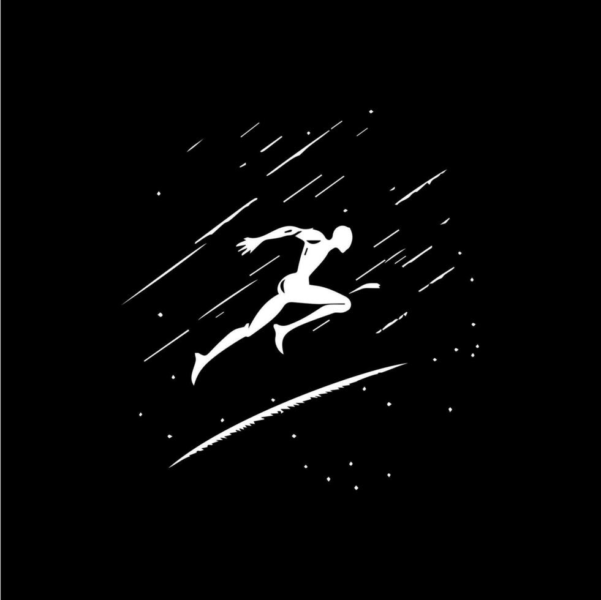
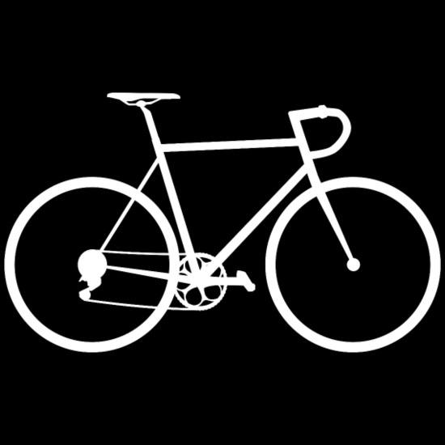
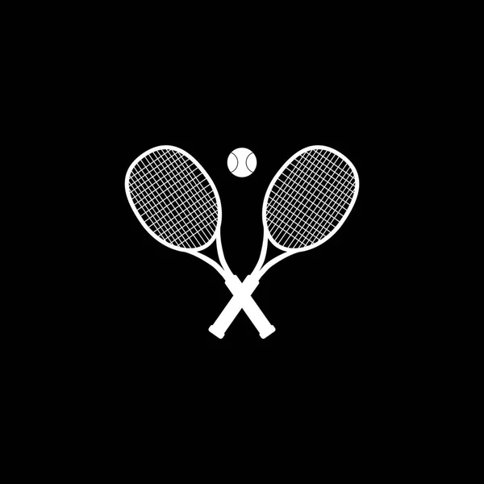
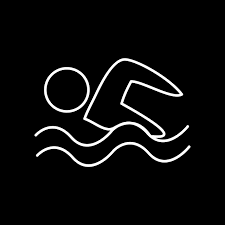

 Atletismo
Curiosidades
- O primeiro campeão olímpico da Era Moderna surgiu no atletismo, dos Estados Unidos, venceu a prova do salto triplo, em 6 de abril de 1986.
- Atleta da Finlândia é o maior medalhista olímpico no atletismo (sim, mais que Usain Bolt). Paavo Nurmi venceu oito medalhas de ouro e três medalhas de prata, entre os Jogos da Antuérpia de 1920 e os de Amsterdã, em 1928.
- Usain Bolt, da Jamaica, tem 8 medalhas de ouro. Elas foram conquistadas nas provas dos 100 metros, 200 metros, e revezamento 4x100m entre os Jogos Olímpicos de Pequim, em 2008, e Rio 2016.
- 101 países já foram medalhistas no atletismo das olimpíadas.
 Ciclismo
Curiosidades
- Ao longo de 120 anos de história do esporte, as nações europeias – particularmente Grã-Bretanha, França, Países Baixos e Itália – conquistaram a maioria das medalhas oferecidas nos Jogos.
- Com registros no século XIX, mais precisamente em 1890, o ciclismo surgiu em paralelo à uma época em que as bicicletas estavam passando por melhorias significativas em suas tecnologias, cooperando para que o ciclismo também se desenvolvesse.
- Na olimpíada de Atlanta, em 1996, adicionou-se a modalidade do ciclismo de montanha, conhecido como cross-country, praticado em Moutain Bikes.
- Na última olimpíada, disputada em Tóquio em 2021, tivemos pela primeira vez a modalidade do BMX estilo livre como uma modalidade do ciclismo nas olimpíadas, mais um grande passo para o reconhecimento desse esporte.
 Tênis
Curiosidades
- O precursor do tênis foi o “jeu de paume”, ou “jogo da mão”, que se originou na França no século 11.
- O tênis Olímpico é disputado em provas de simples para homens e mulheres e duplas masculinas, femininas e mistas. As partidas de simples são disputadas em melhor de três sets com um tie-break padrão em cada set, incluindo o último.
- O tênis foi disputado de forma esporádica ao longo da história dos Jogos Olímpicos. Foi um dos esportes disputados na primeira edição da Olimpíada moderna em Atenas, em 1896.
- Nos últimos anos, a medalha de ouro foi conquistada por várias superestrelas, como Rafael Nadal, campeão Olímpico de simples em 2008 e duplas em 2016, Stan Wawrinka e Roger Federer, campeões olímpicos de duplas em 2008, além de Serena e Venus Williams, que conquistaram oito títulos Olímpicos entre elas.
 Natação
Curiosidades
- O ato de nadar remonta aos tempos pré-históricos, mas foi apenas no século 19 que se tornou amplamente praticado como esporte competitivo.
- Na época, a maioria dos nadadores usava o nado peito, ou uma forma dele. Mais tarde, uma variedade maior de estilos foi adicionada às provas de natação, atualmente presente nos Jogos Olímpicos.
- Os quatro estilos das provas Olímpicas da natação – individuais e de revezamento – são peito, borboleta, costas e crawl; o crawl é usado predominantemente em provas de estilo livre e, dessa forma, o termo “livre” é frequentemente usado como sinônimo.
- A natação esteve presente em todos os Jogos Olímpicos da era moderna. Embora as primeiras provas Olímpicas ocorreram em ambiente natural (os atletas competiram na baía de Zea nos Jogos Olímpicos Atenas 1896), desde os Jogos de 1908, em Londres, as provas acontecem em uma piscina, levando à criação da Federação Internacional de Natação (FINA) no mesmo ano - atualmente conhecida como World Aquatics.